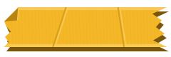

Hover: the tape lifts off its torn end, the z shows for a beat, the tape sticks back on leave. First visit: plays once ~600 ms after load (sessionStorage), never loops.

Replaces the current blur on Peek. The tape peels while the button is held (or toggles with keyboard: Space/Enter), and sticks back on release. In production render the value only while peeled (this demo keeps it at opacity 0).